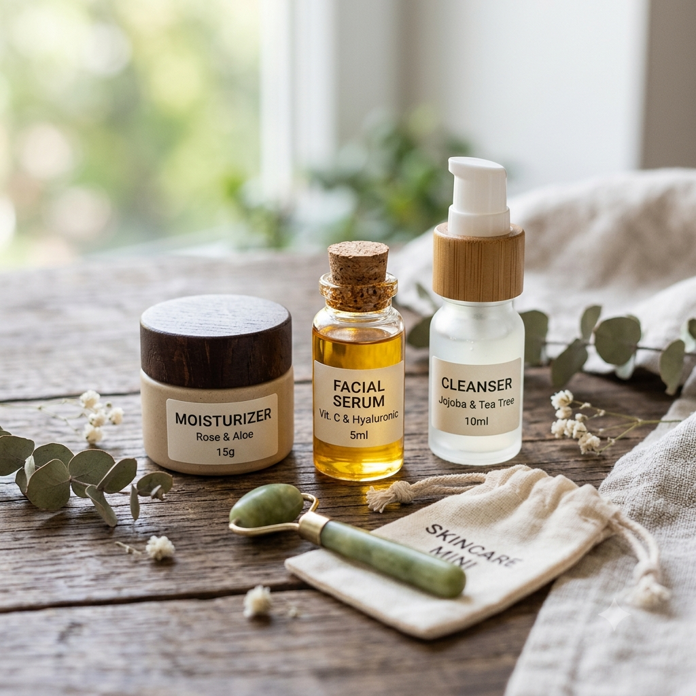
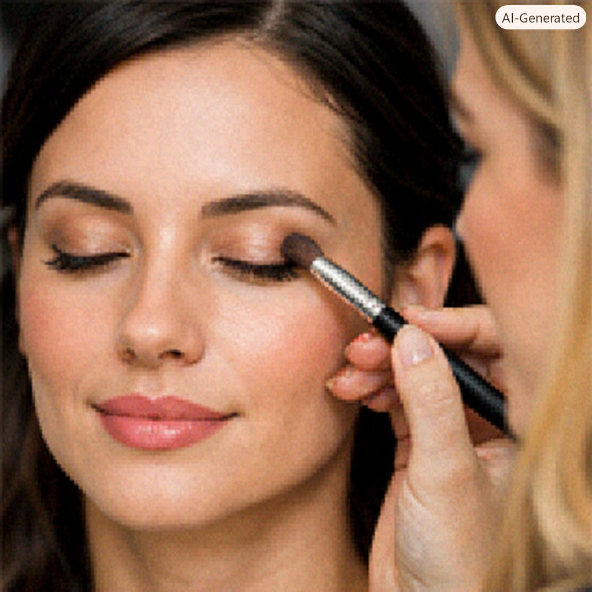

Minha primeira postagem de tutoriais sobre como se automaquiar
Por: Isabela Pontelo
Boas vindas ao meu blog! Vou compartilhar recomendações de maquiagens de qualidade para vocês

Dicas fáceis para se automaquiar!
Por: Isabela Pontelo
No Vídeo de hoje gostaria de compartilhar com vocês algumas dicas sobre como se automaquiar, irei realizar uma make simples em uma modelo para vocês terem uma experiẽncia